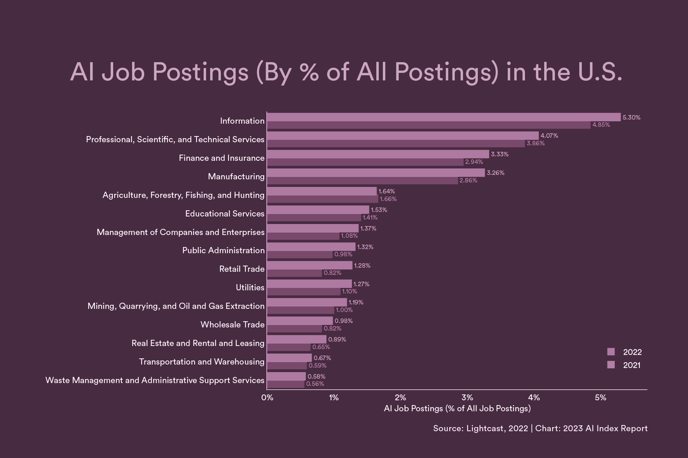

Things AI is Capable of
AI in Job Sector
AI has increased job opportunities by creating new roles in emerging fields such as AI engineering, data science, and machine learning. These roles involve developing, implementing, and optimizing AI algorithms and systems across various industries. Additionally, AI has led to the creation of positions focused on AI governance, ethics, and compliance, ensuring responsible and ethical use of AI technologies. Moreover, AI has augmented human capabilities in existing roles, leading to increased productivity and efficiency. For example, AI-powered tools and automation have streamlined processes in areas such as customer service, healthcare, and manufacturing, creating demand for skilled workers to manage and oversee these systems. Overall, AI's impact on job creation stems from its ability to drive innovation, enhance productivity, and generate new opportunities for employment across diverse sectors.